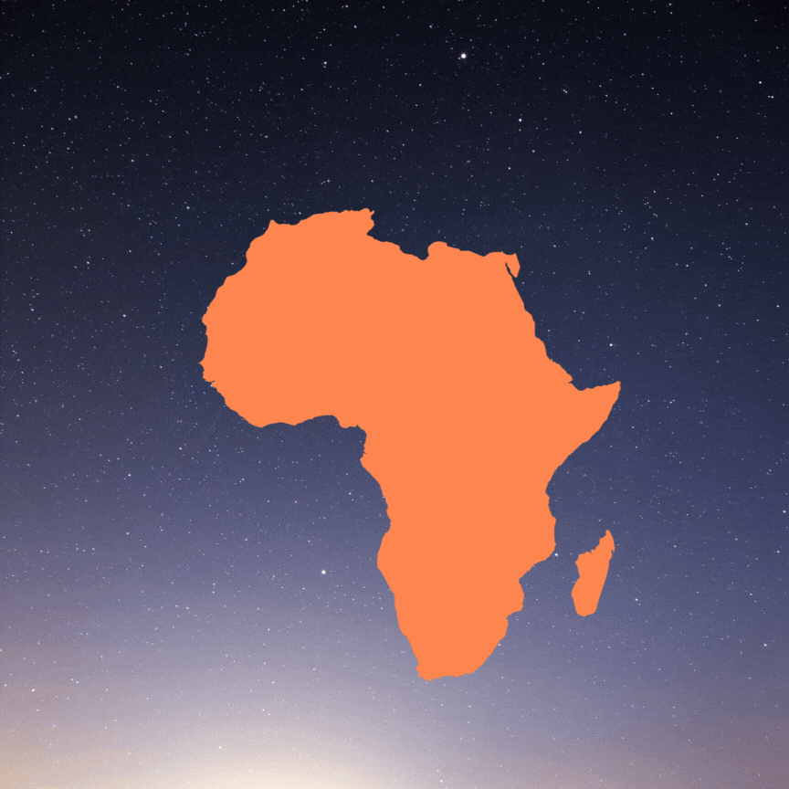

ÁFRICA |
|
| África es el tercer continente más extenso, tras Asia y América. Está situado entre los océanos Atlántico, al oeste, e Índico, al este. El mar Mediterráneo lo separa al norte del continente europeo; el punto en el que los dos continentes se hallan más cercanos es el estrecho de Gibraltar de 14.4 km de ancho. El mar Rojo lo separa al este de la península arábiga y queda unido a Asia a través del istmo de Suez, en territorio egipcio. Posee una superficie total de 30 272 922 km² (621 600 km² en masa insular), que representa el 20,4 % del total de las tierras emergidas del planeta. La población supera los mil trescientos millones de habitantes, un 15 % del total mundial. El continente se divide en 54 estados soberanos siendo uno de ellos, Egipto, transcontinental, además de dos estados con reconocimiento limitado y dos territorios dependientes. | |
|
 |